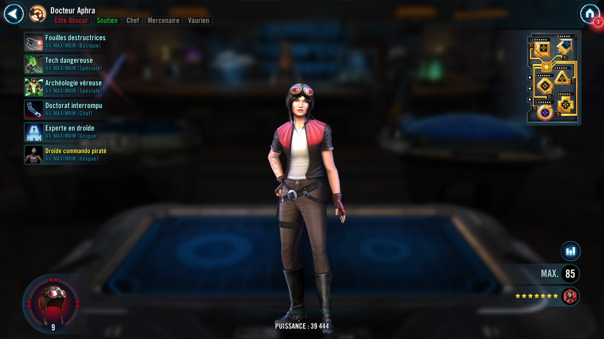
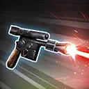
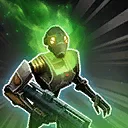
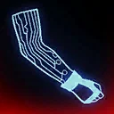

Deal Special damage to target enemy. If they are a Droid, Stun them for 1 turn.
On Aphra's turn, she gains 10% Max Protection (stacking, max 50%) and 2 Siphon until the end of the encounter.

Inflict Accuracy Down for 2 turns on target enemy. Dark Side allies gain Potency Up for 2 turns and 10% Turn Meter. Dark Side Droid allies gain Critical Damage Up and Offense Up for 2 turns and recover 30% Health and Protection. Revive a random non-Separatist Dark Side Droid ally, BT-1, and 0-0-0.
At the start of battle if there were no Galactic Legend allies and all allies are Dark Side Scoundrels, Dark Side Droids, Krrsantan, or Darth Vader, summon a Hacked Commando Droid. If a Hacked Commando Droid is already present, inflict Breach and Target Lock on target enemy for 2 turns and call Hacked Commando Droid to assist, dealing damage again as true damage with additional damage equal to 20% of Aphra's Potency.
Deal Special damage to all enemies, increase their cooldowns by 1, and inflict Doubt on them for 2 turns. Aphra Siphons Potency from target enemy, which can't be resisted.
This ability can't be countered.
Siphon Potency: Gain a percentage of Potency equal to this unit's Siphon until the end of the encounter and the target loses that much Potency (stacking, excludes raid bosses and Galactic Legends)
Omicron Boost : While in 5v5 Grand Arenas: Deal bonus damage to target enemy equal to 50% of Aphra's Potency. Inflict Buff Immunity, Healing Immunity, and Stagger on target enemy for 2 turns.

At the start of battle, Doctor Aphra gains Max Health and Max Protection equal to 30% of her Potency, and if BT-1 or 0-0-0 are an ally, she gains 50% Turn Meter for each. Dark Side allies have +20% Offense. Allied Dark Side Droid, Darth Vader, and Krrsantan also have +20% Max Health.
Whenever a Dark Side ally inflicts a debuff, they gain 5% Offense for 1 turn and Aphra gains 5 Siphon until the end of the encounter. If the Dark Side ally is a Droid, Darth Vader, or Krrsantan, they instead gain 10% Offense for 1 turn and Aphra instead gains 10 Siphon until the end of the encounter. Whenever Doctor Aphra, BT-1, or 0-0-0 inflict a debuff or are critically hit, they gain 10% Turn Meter.
Whenever an enemy falls below 30% Health, they are inflicted with Expose and Speed Down for 2 turns, which can't be evaded or resisted.
Omicron Boost : While in 5v5 Grand Arenas: Dark Side Droid and Dark Side Scoundrel allies have +50% Critical Avoidance and +30 Speed. Aphra has +50% Potency. Whenever a Dark Side Droid or Scoundrel ally inflicts a debuff on an enemy, they gain 10% Turn Meter (limit once per turn). While enemies are debuffed, they have -20% Tenacity.
At the start of Aphra's turn, she, Dark Side Droid, Dark Side Scoundrel, Darth Vader, and Krrsantan allies gain Defense, Offense, and Tenacity equal to 30% of Doctor Aphra's Potency until the start of her next turn. Hacked Commando Droid ally instead gains 60%. While she is active, if BT-1 or 0-0-0 are allies, they have +20% Potency and +20 Speed.
The first time a Dark Side Droid ally falls below 50% Health, they gain Protection Up (40%) for 2 turns.
Omicron Boost : While in 5v5 Grand Arenas: The first time a non-Separatist Dark Side Droid or Dark Side Scoundrel ally falls below 20% Health, they gain Damage Immunity for 1 turn. Whenever a Dark Side Droid is defeated, they inflict a Damage Over Time on all enemies for 2 turns. Inflict an additional Damage Over Time for 2 turns for each Relic level that character has.
Aphra, non-Separatist Dark Side Droids, Dark Side Scoundrels, and Krrsantan are immune to Ability Block and Healing Immunity.
Dark Side, Attacker, Droid
[Basic] Enfilade: Deal Physical damage to target enemy. All allies without Offense Up gain Offense Up for 2 turns.
[Special] Besiege: Deal Physical damage to target enemy and call a random ally to assist.
[Special] Lunging Strike: Deal Physical damage to target enemy and inflict Armor Shred for the rest of the battle. This attack deals 20% more damage for each buff and debuff on the target enemy. Enemies defeated by this ability can't be revived.
[Unique] Summoned: This unit's stats scale with the summoner's stats. This unit can only be summoned to the ally slot if it's available. This unit can't be summoned in certain raids. This unit can't be revived. If an effect counts defeated units, this unit doesn't count. When there are no other allied combatants, this unit escapes from battle. A unit can't be revived if this summoned unit exists in their slot.